This procedure is based on the detailed description given by M. Dupuis and S. Karna (J. Comp. Chem. 12, 487 (1991)). The program is capable of calculating the quantities shown in the Table.
See also units.
Table:
Quantities Calculable using POLAR
Type of Phenomenon
Symbol
Frequency Dependent Polarizability
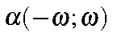
Second Harmonic Generation
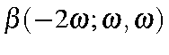
Electrooptic Pockels Effect
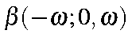
Optical Rectification
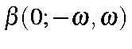
Third Harmonic Generation
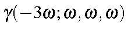
DC-EFISH
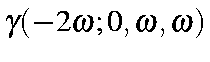
Optical Kerr Effect
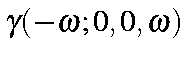
Intensity Dependent Index of Refraction
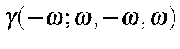
Keywords for the POLAR calculation are given inside the POLAR keyword. Quantities under user-control are:
IWFLB=n
The type of calculation to be performed. This variable is only important if iterative beta calculations are chosen.
IWFLB=0
static (This is the default)
IWFLB=1
second harmonic generation
IWFLB=2
electrooptic Pockels effect
IWFLB=3
optical rectification
E=( 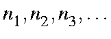)
The energies, in eV, of the radiation to be used. Up to 10 energies can be specified. If this option is not used, the default energies of 0.0, 0.25, and 0.50 eV will be used.
BETA=n
Type of beta calculation.
BETA=0
(0;0) static (This is the default)
BETA=1
iterative calculation with type of 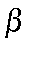chosen by IWFLB
BETA=-1
Noniterative calculation of second harmonic generation
BETA=-2
Noniterative calculation of electrooptic Pockels effect
BETA=-3
Noniterative calculation of optical rectification
GAMMA=n
Type of gamma calculation:
GAMMA=0
No gamma calculation
GAMMA=1
third harmonic generation (This is the default)
GAMMA=2
DC-EFISH
GAMMA=3
intensity dependent index of refraction
GAMMA=4
optical Kerr effect
TOL=n.nn
Cutoff tolerance for 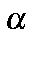calculations, default=0.001.
MAXITU=nnn
Maximum number of interactions for beta, default: 500.
MAXITA=nnn
Maximum number of iterations for calculations, default: 150.
BTOL=n.nn
Cutoff tolerance for calculations The default is 0.001.